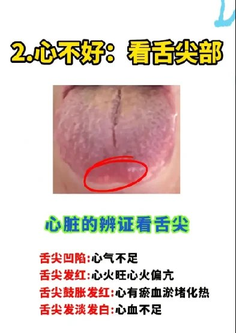
舌尖 · 心 Tip · Heart
- 舌尖凹陷：心气不足 · sunken tip = Heart-qi deficiency
- 舌尖发红：心火偏亢 · red tip = Heart fire
- 舌尖鼓胀发红：心有瘀血淤堵化热 · swollen red tip = Heart blood-stasis with heat
- 舌尖淡白：心血不足 · pale tip = Heart-blood deficiency
In TCM's four examinations, the tongue is one of the most reliable windows into the body's internal state. The Heart opens to the tongue; every other organ system shows itself there too. Click a zone, pick what you see today, and read what classical TCM associates with that picture.
中医四诊之中，舌诊为窥察脏腑内象之最可靠门户。心开窍于舌，他脏之象亦皆见于斯。点击舌面分区，择今日所见之色形苔，可阅传统中医对此象之解。
Classical foundation · 舌与经络. The 《黄帝内经·灵枢》 describes nine distinct connections between the tongue and the meridian system — through the main channels (经脉), their divergences (经别), and their sinews (经筋). The tongue is therefore not metaphor but a direct external display of the qi and blood of the inner organs.
典籍依据 · 舌与经络。《黄帝内经·灵枢》载经脉、经别、经筋共有九处与舌相连。故舌非象征之物，乃脏腑气血直显于外之标也。
| Channel经络 | Connection to the tongue关系 |
|---|---|
| 足太阴脾经 | 连舌本，散舌下 — connects to the tongue root, disperses beneath the tongue |
| 足少阴肾经 | 循咽喉夹舌本 — runs along the throat, brackets the tongue root |
| 足厥阴肝经 | 络舌本 — networks with the tongue root |
| 足少阴经别 | 别系舌本 — divergence attaches to the tongue root |
| 足太阴经别 | 别贯舌中 — divergence pierces the middle of the tongue |
| 手少阴心经 | 沿食管，经别系舌本 — runs along the oesophagus; divergence attaches to the tongue root |
| 足太阳膀胱经 | 筋结于舌本 — sinew binds to the tongue root |
| 手少阳三焦经 | 筋入系舌本 — sinew enters and attaches to the tongue root |
| 手太阴肺经 | 上达咽喉与舌根相连 — ascends to the throat, joining the tongue root |
Having your own photo to compare against the swatches below makes self-assessment far more accurate.
拍下自己之舌照，对比下方色板，自察更为准确。
Each region of the tongue corresponds to a specific organ system. Click any zone on the diagram to see which organ it reflects and what changes in that area might mean.
舌面之每一区皆对应一脏腑。点击图中任一区，可见其所映之脏腑，与此处变化所示之意。
The abstract diagram above shows the five zones; the real photographs below show what the same map looks like on a real tongue, plus three common patterns you may meet often in clinic. Use them to calibrate what you see in the mirror.
上图为分区之示意，下列实景舌象可对照学习——五区之实例及临床常见之三种齿痕舌型。镜中所察之舌，可与之相比。
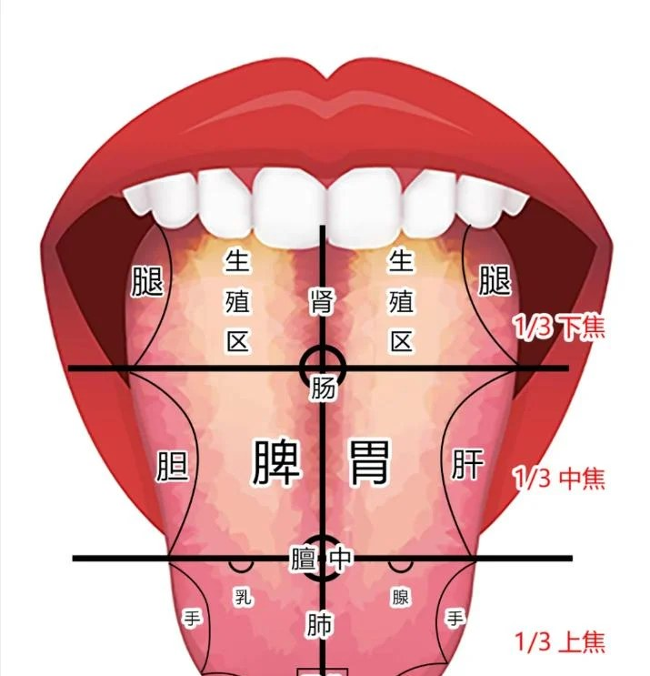
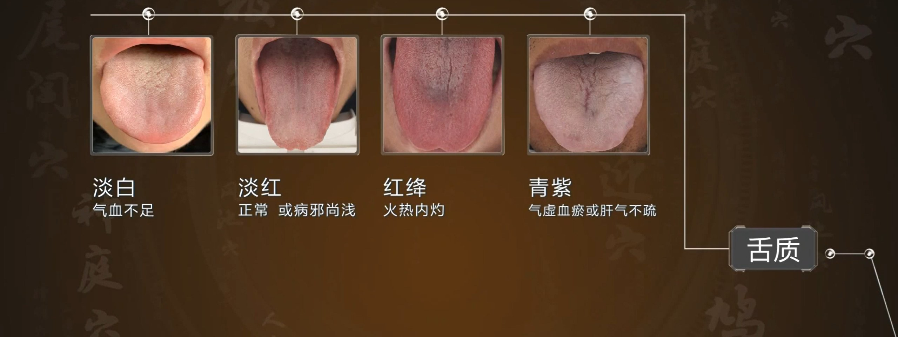
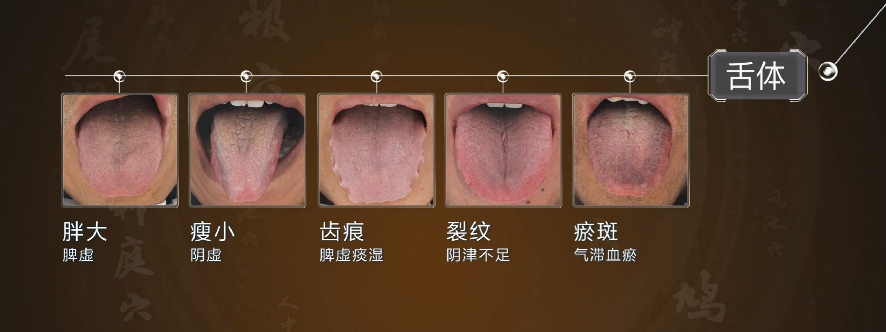

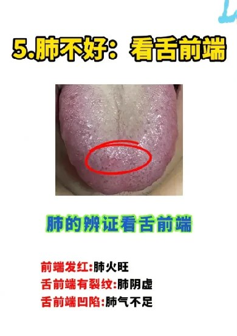
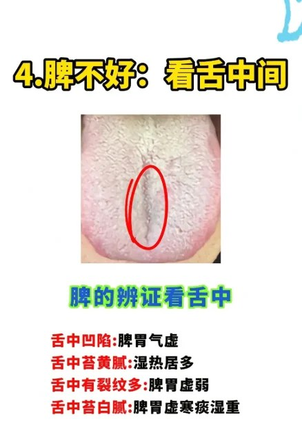
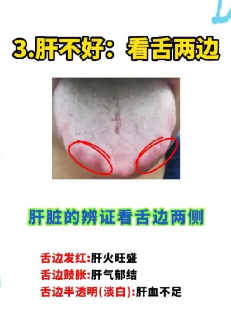
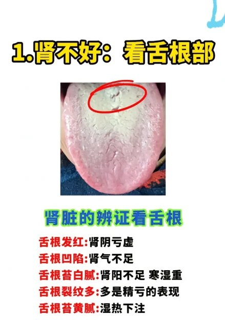
A swollen tongue body, pressed against the teeth, leaves scalloped indentations. The cause is almost always retained dampness — but the reason for the dampness differs. Below are the three most common root patterns. Match the body presentation, not just the tongue.
舌体胖大，受牙齿挤压，则成齿痕。其因常为水湿内停——然而水湿之因有别。下列三型为最常见之根本证型。当合身之表现而辨之，非独以舌象为凭。
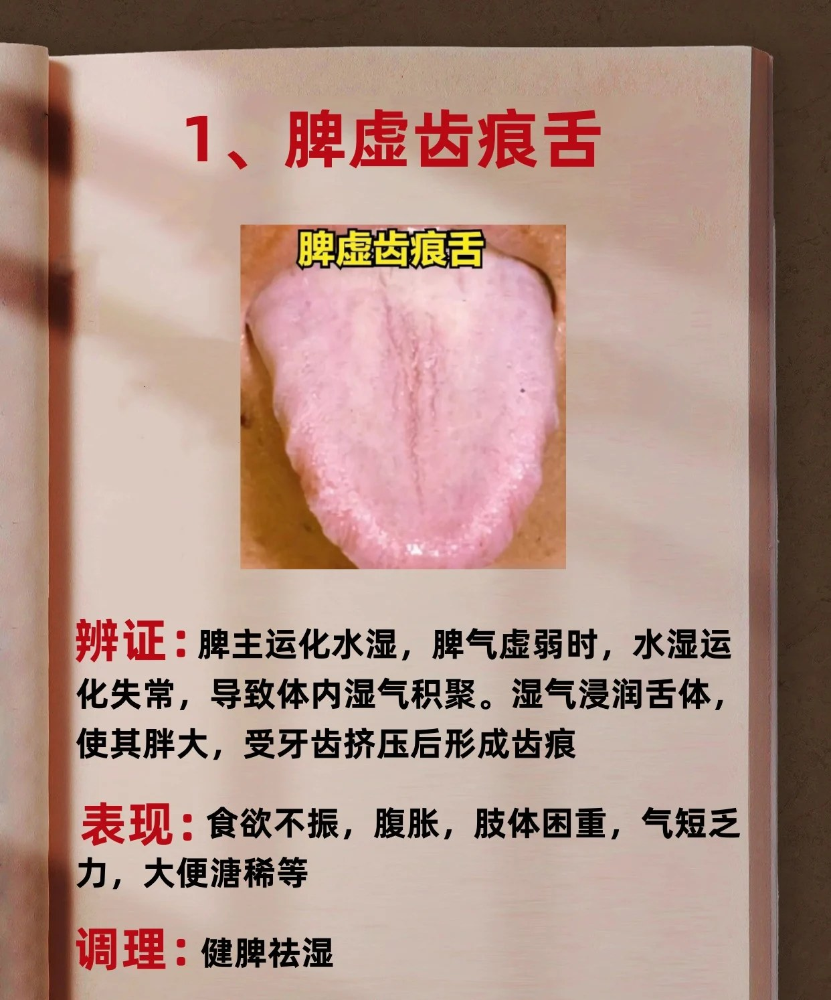
辨证：脾主运化水湿。脾气虚弱，水湿运化失常，湿气积聚于内。湿浸舌体，使其胖大，受牙齿挤压而成齿痕。
表现：食欲不振，腹胀，肢体困重，气短乏力，大便溏稀。
调理：健脾祛湿。参考方：参苓白术散。
Pattern: The Spleen governs the transformation of fluids. When Spleen-qi is weak, dampness accumulates and soaks into the tongue body, which then swells against the teeth.
Presentation: Poor appetite, abdominal distension, heavy limbs, shortness of breath, loose stools.
Approach: Strengthen the Spleen, drain dampness. Reference formula: Shēn Líng Bái Zhú Sǎn.
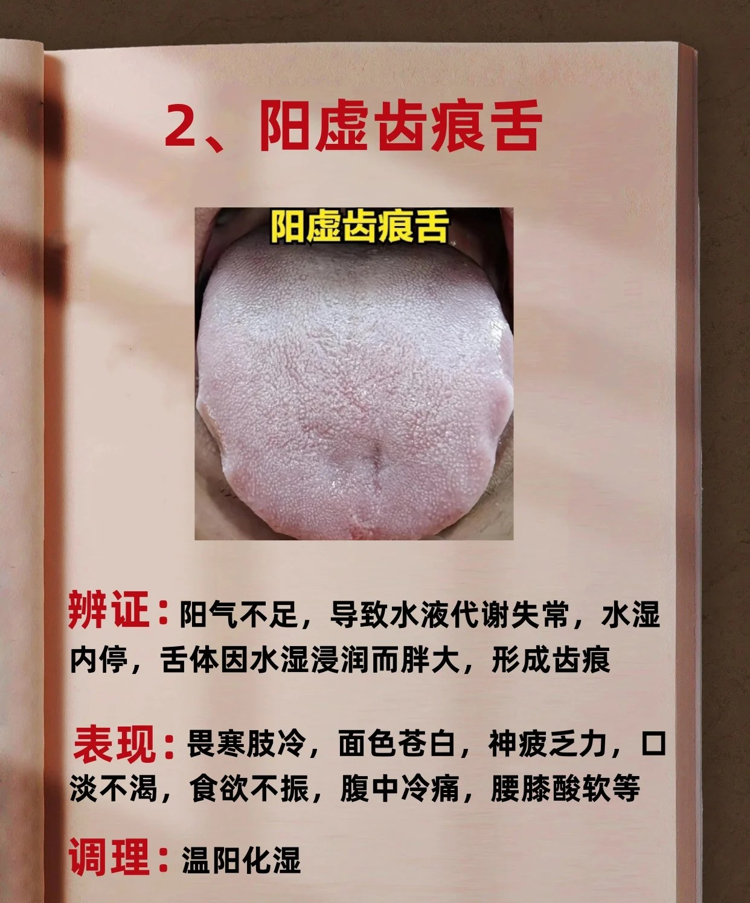
辨证：阳气不足，水液代谢失常，水湿内停。舌体因水湿浸润而胖大，形成齿痕。
表现：畏寒肢冷，面色苍白，神疲乏力，口淡不渴，食欲不振，腹中冷痛，腰膝酸软。
调理：温阳化湿。参考方：附子理中丸。
Pattern: When yang-qi is insufficient, fluid metabolism falters and dampness lingers. The tongue body swells under that retained fluid, creating teeth marks.
Presentation: Aversion to cold, cold limbs, pale face, fatigue, bland taste with no thirst, poor appetite, cold abdominal pain, weak lower back and knees.
Approach: Warm yang, transform damp. Reference formula: Fù Zǐ Lǐ Zhōng Wán.
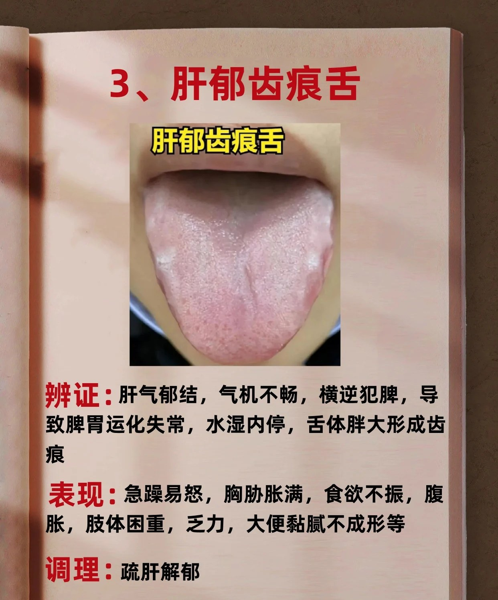
辨证：肝气郁结，气机不畅，横逆犯脾，脾胃运化失常，水湿内停，舌体胖大形成齿痕。
表现：急躁易怒，胸胁胀满，食欲不振，腹胀，肢体困重，乏力，大便黏腻不成形。
调理：疏肝解郁。参考方：逍遥丸。
Pattern: When Liver-qi is bound, the qi mechanism stalls and crosses sideways into the Spleen. Digestion falters, dampness retains, and the tongue swells.
Presentation: Irritability, easily angered, fullness in the chest and rib-side, poor appetite, abdominal distension, heavy limbs, fatigue, sticky / unformed stools.
Approach: Soothe the Liver, release stagnation. Reference formula: Xiāo Yáo Wán.
Educational reference, not diagnosis. Real tongues rarely show one pattern in isolation; an experienced practitioner weighs body constitution, pulse, and presenting symptoms together. Use the practitioners directory if a sign here matches your own and you want a clinical opinion.
仅作教育参考，非临床诊断。真之舌象少有单一证型；明医必合体质、脉象、症候而参之。如所见与上述相合而欲请专业之断，可参医师名录。
The deep, underlying color of the tongue body itself (not the coating) reveals the state of qi, blood, and yin–yang balance. Tap the description that matches your tongue today.
舌体之底色（非舌苔）反映气、血、阴阳之盛衰。点击下方相符之色，即得其象。
Shape and texture reveal how the body manages fluids, supports digestion, and nourishes tissues.
舌形与舌质显示身之水液、消化与濡养之机。
The coating reflects the state of Stomach qi and the depth of any pathogenic factor. A normal coating is thin, white, and slightly moist.
舌苔反映胃气之盛衰与邪气深浅。正常之苔，薄白而微润。
Tongue diagnosis is one part of the classical four examinations; a trained practitioner integrates it with pulse, history, and observation in a way no AI can replicate. For anything you intend to act on clinically, this is the right path.
舌诊为传统四诊之一；合于脉、问、望，方得整体之象——此非人工智能所能替也。凡欲据以调治者，请循此路。
Send your tongue photo to Google Gemini for a structured first-pass on body color, coating, shape, and likely TCM patterns — useful as a starting point before consulting a practitioner. This breaks the “photo never leaves your device” promise above — the photo is sent to Google's servers under your own API key.
可将舌照送Google Gemini，得舌色、舌苔、舌形与可能证型之初判结果——可作为请教中医师之先期参考。此举将打破上文「舌照不离本机」之承诺——舌照将以您自有之 API 密钥送至 Google 服务器。
gemini-2.0-flash at no charge.gemini-2.0-flash每日约 1500 次，无须付费。Possible TCM patterns based on what you've selected. The more signs that match, the higher the pattern appears.
依所选之色、形、苔，列出可能之中医证型。所合之征越多，证型排序越前。
A simple morning routine — about 30 seconds.
晨起一简短之察舌法，约三十秒。
First thing in the morning, before brushing teeth, eating, or drinking. Stand near natural daylight if possible.
晨起即察，未刷牙、未进饮食之前。如可，立于自然光下。
Open the mouth and extend the tongue naturally. Don't strain or push it forward forcefully — that can change its color and shape.
张口自然伸舌，勿强用力——强力则色形俱变。
Show your tongue for only 10–15 seconds at a time. Holding it out longer can make it look redder than it actually is.
每次伸舌仅 10–15 秒。久伸则舌色显红，非其本色。
Body color, body shape & size, the coating (color, thickness, moisture), and any cracks, marks, or spots.
舌之色、舌之形与大小、苔（色、厚薄、润燥）、与裂纹、齿痕或斑点。
Use the zone map above to see which area shows the change — front, sides, center, or back.
对照上方分区图，察变化所在——舌尖、舌边、舌中或舌根。
A single morning's tongue means little. Track changes over a week or two — that's where the real signal is.
一日之舌象意义甚微。当观一两周之变化——其中方有真正之信息。
Educational use only. Tongue diagnosis is an aid to self-awareness and lifestyle adjustment, not a substitute for medical assessment. If you notice a sudden, dramatic change in your tongue's appearance, or your symptoms persist or worsen, please consult a qualified TCM practitioner or healthcare professional.
仅作教育用途。舌诊为增进自我觉察与调节生活方式之助，非临床医学评估之替代。如舌象骤变、症状持续或加重，请咨询合格之中医师或专业医务人员。